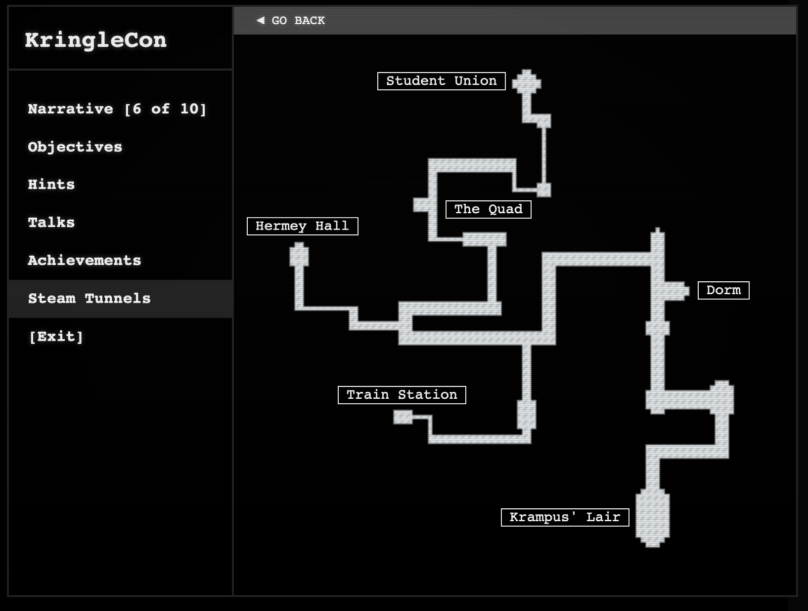

8. Bypassing the Frido Sleigh CAPTEHA¶
Difficulty: üéÑüéÑüéÑüéÑ
üìú Info & Hints¶
Bypassing the Frido Sleigh CAPTEHA
Help Krampus beat the Frido Sleigh contest.
For hints on achieving this objective, please talk with Alabaster Snowball in the Speaker Unpreparedness Room.
üßùü誂Äç‚ôÇÔ∏è Krampus Hollyfeld
But, before I can tell you more, I need to know that I can trust you.
Tell you what – if you can help me beat the Frido Sleigh contest (Objective 8), then I'll know I can trust you. The contest is here on my screen and at fridosleigh.com.
No purchase necessary, enter as often as you want, so I am!
They set up the rules, and lately, I have come to realize that I have certain materialistic, cookie needs.
Unfortunately, it's restricted to elves only, and I can't bypass the CAPTEHA.
(That's Completely Automated Public Turing test to tell Elves and Humans Apart.)
I've already cataloged 12,000 images and decoded the API interface.
Can you help me bypass the CAPTEHA and submit lots of entries?
Machine Learning
Frido Sleigh Continuous Cookie Contest website
Beat The Frido Sleigh contest
‚ö°Ô∏è Solution¶
Download:
-
predict_images_using_trained_model.pyandretrain.pyfrom Chris Davis github repository.
And make sure you have python installed then install the following python packages:
-
tensorflow==1.15
-
tensorflow_hub
Installation (Tested on Ubuntu 18.04 - 8GB Memory - 4 core cpu VM):
sudo apt install python3 python3-pip -y sudo python3 -m pip install --upgrade pip sudo python3 -m pip install --upgrade setuptools sudo python3 -m pip install --upgrade tensorflow==1.15 sudo python3 -m pip install tensorflow_hub
Training the Module :¶
We need to train our module then run it live to solve the CAPTEHA.
-
Unzip downloaded images to a folder called
training_imagesinside your code folderAnd the
training_imagesfolder will look like this: -
Training our TensowFlow ML Model Based on Images in ./training_images/ Folder:
Make sure you are in your code directory and run:
python3 retrain.py --image_dir ./training_images/
This will create two files we will be using at:
-
/tmp/retrain_tmp/output_graph.pb- Trained Machine Learning Model -
/tmp/retrain_tmp/output_labels.txt- Labels for Images
-
Predicting Images from CAPTEHA :¶
We need to get images into our module then do prediction based on our trained Model.
-
Let's begin by understanding how the
CAPTEHAapi works by looking atNetwork tabin browser developer tools while you are using the website:-
First when you click on button the browser send
POSTrequest to get the images from the api athttps://fridosleigh.com/api/capteha/request. -
The api response with images in a json object containing
uuidfor each image and the image itself encoded with base64, also the image types the CAPTEHA Challenge is looking for. -
Then after selecting the images and click
submityour browser sendPOSTrequest to the api athttps://fridosleigh.com/api/capteha/submitwith the answers in form ofuuidlist of all selected Images -
and the api response with the status/error message based on the answer: Is it correct? False? too few ?too many? ...
-
-
Open
capteha_api.pyin your code editor:Original
capteha_api.py#!/usr/bin/env python3 # Fridosleigh.com CAPTEHA API - Made by Krampus Hollyfeld import requests import json import sys def main(): yourREALemailAddress = "YourRealEmail@SomeRealEmailDomain.RealTLD" # Creating a session to handle cookies s = requests.Session() url = "https://fridosleigh.com/" json_resp = json.loads(s.get("{}api/capteha/request".format(url)).text) b64_images = json_resp['images'] # A list of dictionaries eaching containing the keys 'base64' and 'uuid' challenge_image_type = json_resp['select_type'].split(',') # The Image types the CAPTEHA Challenge is looking for. challenge_image_types = [challenge_image_type[0].strip(), challenge_image_type[1].strip(), challenge_image_type[2].replace(' and ','').strip()] # cleaning and formatting ''' MISSING IMAGE PROCESSING AND ML IMAGE PREDICTION CODE GOES HERE ''' # This should be JUST a csv list image uuids ML predicted to match the challenge_image_type . final_answer = ','.join( [ img['uuid'] for img in b64_images ] ) json_resp = json.loads(s.post("{}api/capteha/submit".format(url), data={'answer':final_answer}).text) if not json_resp['request']: # If it fails just run again. ML might get one wrong occasionally print('FAILED MACHINE LEARNING GUESS') print('--------------------\nOur ML Guess:\n--------------------\n{}'.format(final_answer)) print('--------------------\nServer Response:\n--------------------\n{}'.format(json_resp['data'])) sys.exit(1) print('CAPTEHA Solved!') # If we get to here, we are successful and can submit a bunch of entries till we win userinfo = { 'name':'Krampus Hollyfeld', 'email':yourREALemailAddress, 'age':180, 'about':"Cause they're so flippin yummy!", 'favorites':'thickmints' } # If we win the once-per minute drawing, it will tell us we were emailed. # Should be no more than 200 times before we win. If more, somethings wrong. entry_response = '' entry_count = 1 while yourREALemailAddress not in entry_response and entry_count < 200: print('Submitting lots of entries until we win the contest! Entry #{}'.format(entry_count)) entry_response = s.post("{}api/entry".format(url), data=userinfo).text entry_count += 1 print(entry_response) if __name__ == "__main__": main()
As see we need to add our image processing an machine learning prediction code in
capteha_api.py:''' MISSING IMAGE PROCESSING AND ML IMAGE PREDICTION CODE GOES HERE '''
Also make sure it's return return the final answer as list of
uuidsto send it back to the serverfinal_answer = ','.join( [ img['uuid'] for img in b64_images ] )
-
Open
predict_images_using_trained_model.pyin your code editor:Original
predict_images_using_trained_model.py#!/usr/bin/python3 # Image Recognition Using Tensorflow Exmaple. # Code based on example at: # https://raw.githubusercontent.com/tensorflow/tensorflow/master/tensorflow/examples/label_image/label_image.py import os os.environ['TF_CPP_MIN_LOG_LEVEL'] = '3' import tensorflow as tf tf.logging.set_verbosity(tf.logging.ERROR) import numpy as np import threading import queue import time import sys # sudo apt install python3-pip # sudo python3 -m pip install --upgrade pip # sudo python3 -m pip install --upgrade setuptools # sudo python3 -m pip install --upgrade tensorflow==1.15 def load_labels(label_file): label = [] proto_as_ascii_lines = tf.gfile.GFile(label_file).readlines() for l in proto_as_ascii_lines: label.append(l.rstrip()) return label def predict_image(q, sess, graph, image_bytes, img_full_path, labels, input_operation, output_operation): image = read_tensor_from_image_bytes(image_bytes) results = sess.run(output_operation.outputs[0], { input_operation.outputs[0]: image }) results = np.squeeze(results) prediction = results.argsort()[-5:][::-1][0] q.put( {'img_full_path':img_full_path, 'prediction':labels[prediction].title(), 'percent':results[prediction]} ) def load_graph(model_file): graph = tf.Graph() graph_def = tf.GraphDef() with open(model_file, "rb") as f: graph_def.ParseFromString(f.read()) with graph.as_default(): tf.import_graph_def(graph_def) return graph def read_tensor_from_image_bytes(imagebytes, input_height=299, input_width=299, input_mean=0, input_std=255): image_reader = tf.image.decode_png( imagebytes, channels=3, name="png_reader") float_caster = tf.cast(image_reader, tf.float32) dims_expander = tf.expand_dims(float_caster, 0) resized = tf.image.resize_bilinear(dims_expander, [input_height, input_width]) normalized = tf.divide(tf.subtract(resized, [input_mean]), [input_std]) sess = tf.compat.v1.Session() result = sess.run(normalized) return result def main(): # Loading the Trained Machine Learning Model created from running retrain.py on the training_images directory graph = load_graph('/tmp/retrain_tmp/output_graph.pb') labels = load_labels("/tmp/retrain_tmp/output_labels.txt") # Load up our session input_operation = graph.get_operation_by_name("import/Placeholder") output_operation = graph.get_operation_by_name("import/final_result") sess = tf.compat.v1.Session(graph=graph) # Can use queues and threading to spead up the processing q = queue.Queue() unknown_images_dir = 'unknown_images' unknown_images = os.listdir(unknown_images_dir) #Going to interate over each of our images. for image in unknown_images: img_full_path = '{}/{}'.format(unknown_images_dir, image) print('Processing Image {}'.format(img_full_path)) # We don't want to process too many images at once. 10 threads max while len(threading.enumerate()) > 10: time.sleep(0.0001) #predict_image function is expecting png image bytes so we read image as 'rb' to get a bytes object image_bytes = open(img_full_path,'rb').read() threading.Thread(target=predict_image, args=(q, sess, graph, image_bytes, img_full_path, labels, input_operation, output_operation)).start() print('Waiting For Threads to Finish...') while q.qsize() < len(unknown_images): time.sleep(0.001) #getting a list of all threads returned results prediction_results = [q.get() for x in range(q.qsize())] #do something with our results... Like print them to the screen. for prediction in prediction_results: print('TensorFlow Predicted {img_full_path} is a {prediction} with {percent:.2%} Accuracy'.format(**prediction)) if __name__ == "__main__": main()
In here the predict images module is getting images from the folder
unknown_imagesthen process each oneunknown_images_dir = 'unknown_images' unknown_images = os.listdir(unknown_images_dir)
We need to link between the images from the api and our input into predication module
-
Let's start by editing
capteha_api.py:Replace
YourRealEmail@SomeRealEmailDomain.RealTLDwith your email to receive the wining codeyourREALemailAddress = "YourRealEmail@SomeRealEmailDomain.RealTLD"
Import our predication module by adding this at the top of our script:
import predict_images_using_trained_model
Replace
final_answerline with new one that gets the result frommainfunction inpredict_images_using_trained_modelafter providingb64_images,challenge_image_types:final_answer = ','.join(predict_images_using_trained_model.main(b64_images, challenge_image_types))
So our final code will be:
Modified
capteha_api.py#!/usr/bin/env python3 # Fridosleigh.com CAPTEHA API - Made by Krampus Hollyfeld import requests import json import sys import predict_images_using_trained_model def main(): yourREALemailAddress = "email@email.com" # Creating a session to handle cookies s = requests.Session() url = "https://fridosleigh.com/" json_resp = json.loads(s.get("{}api/capteha/request".format(url)).text) b64_images = json_resp['images'] # A list of dictionaries eaching containing the keys 'base64' and 'uuid' challenge_image_type = json_resp['select_type'].split(',') # The Image types the CAPTEHA Challenge is looking for. challenge_image_types = [challenge_image_type[0].strip(), challenge_image_type[1].strip(), challenge_image_type[2].replace(' and ','').strip()] # cleaning and formatting # This should be JUST a csv list image uuids ML predicted to match the challenge_image_type . final_answer = predict_images_using_trained_model.main(b64_images, challenge_image_types) json_resp = json.loads(s.post("{}api/capteha/submit".format(url), data={'answer':final_answer}).text) if not json_resp['request']: # If it fails just run again. ML might get one wrong occasionally print('FAILED MACHINE LEARNING GUESS') print('--------------------\nOur ML Guess:\n--------------------\n{}'.format(final_answer)) print('--------------------\nServer Response:\n--------------------\n{}'.format(json_resp['data'])) sys.exit(1) print('CAPTEHA Solved!') # If we get to here, we are successful and can submit a bunch of entries till we win userinfo = { 'name':'Krampus Hollyfeld', 'email':yourREALemailAddress, 'age':180, 'about':"Cause they're so flippin yummy!", 'favorites':'thickmints' } # If we win the once-per minute drawing, it will tell us we were emailed. # Should be no more than 200 times before we win. If more, somethings wrong. entry_response = '' entry_count = 1 while yourREALemailAddress not in entry_response and entry_count < 200: print('Submitting lots of entries until we win the contest! Entry #{}'.format(entry_count)) entry_response = s.post("{}api/entry".format(url), data=userinfo).text entry_count += 1 print(entry_response) if __name__ == "__main__": main()
-
Editing
predict_images_using_trained_model.py:First we will need to import
base64package to decode the imagesimport base64
then we change our
mainfunction accept two variablesb64_images,challenge_image_types:def main(unknown_images, types):
remove the following lines because we will get our images as input into the function:
unknown_images_dir = 'unknown_images' unknown_images = os.listdir(unknown_images_dir)
Change the
img_full_pathtouuid:img_full_path = image['uuid']
replace
image_bytesline with our decoded base64 imageimage_bytes = base64.b64decode(image['base64'])
Create an empty list for
uuidsmatching the challenge types
uuids_list = []
Check predict image type if it's in the capteha_api challenge types
if prediction['prediction'] in types: uuids_list.append(prediction['img_full_path'])
finally return the uuids list
return uuids_list
So our final code will be:
Modified
predict_images_using_trained_model.py#!/usr/bin/python3 # Image Recognition Using Tensorflow Exmaple. # Code based on example at: # https://raw.githubusercontent.com/tensorflow/tensorflow/master/tensorflow/examples/label_image/label_image.py import os os.environ['TF_CPP_MIN_LOG_LEVEL'] = '3' import tensorflow as tf tf.logging.set_verbosity(tf.logging.ERROR) import numpy as np import threading import queue import time import sys import base64 def load_labels(label_file): label = [] proto_as_ascii_lines = tf.gfile.GFile(label_file).readlines() for l in proto_as_ascii_lines: label.append(l.rstrip()) return label def predict_image(q, sess, graph, image_bytes, img_full_path, labels, input_operation, output_operation): image = read_tensor_from_image_bytes(image_bytes) results = sess.run(output_operation.outputs[0], { input_operation.outputs[0]: image }) results = np.squeeze(results) prediction = results.argsort()[-5:][::-1][0] q.put( {'img_full_path':img_full_path, 'prediction':labels[prediction].title(), 'percent':results[prediction]} ) def load_graph(model_file): graph = tf.Graph() graph_def = tf.GraphDef() with open(model_file, "rb") as f: graph_def.ParseFromString(f.read()) with graph.as_default(): tf.import_graph_def(graph_def) return graph def read_tensor_from_image_bytes(imagebytes, input_height=299, input_width=299, input_mean=0, input_std=255): image_reader = tf.image.decode_png( imagebytes, channels=3, name="png_reader") float_caster = tf.cast(image_reader, tf.float32) dims_expander = tf.expand_dims(float_caster, 0) resized = tf.image.resize_bilinear(dims_expander, [input_height, input_width]) normalized = tf.divide(tf.subtract(resized, [input_mean]), [input_std]) sess = tf.compat.v1.Session() result = sess.run(normalized) return result def main(unknown_images, types): # Loading the Trained Machine Learning Model created from running retrain.py on the training_images directory graph = load_graph('/tmp/retrain_tmp/output_graph.pb') labels = load_labels("/tmp/retrain_tmp/output_labels.txt") # Load up our session input_operation = graph.get_operation_by_name("import/Placeholder") output_operation = graph.get_operation_by_name("import/final_result") sess = tf.compat.v1.Session(graph=graph) # Can use queues and threading to spead up the processing q = queue.Queue() #Going to interate over each of our images. for image in unknown_images: img_full_path = image['uuid'] print('Processing Image {}'.format(img_full_path)) # We don't want to process too many images at once. 10 threads max while len(threading.enumerate()) > 10: time.sleep(0.0001) #predict_image function is expecting png image bytes so we read image as 'rb' to get a bytes object image_bytes = base64.b64decode(image['base64']) threading.Thread(target=predict_image, args=(q, sess, graph, image_bytes, img_full_path, labels, input_operation, output_operation)).start() print('Waiting For Threads to Finish...') while q.qsize() < len(unknown_images): time.sleep(0.001) #getting a list of all threads returned results prediction_results = [q.get() for x in range(q.qsize())] #create list of our uuids matching the types uuids_list = [] for prediction in prediction_results: print('TensorFlow Predicted {img_full_path} is a {prediction} with {percent:.2%} Accuracy'.format(**prediction)) if prediction['prediction'] in types: uuids_list.append(prediction['img_full_path']) return uuids_list if __name__ == "__main__": main()
-
Let's run and win!
python3 capteha_api.py
And you get the winning message:
Congratulations and Happy Holidays!
Entries for email address YourRealEmail@SomeRealEmailDomain.RealTLD no longer accepted as our systems show your email was already randomly selected as a winner!
Go check your email to get your winning code. Please allow up to 3-5 minutes for the email to arrive in your inbox or check your spam filter settings.
Congratulations and Happy Holidays!
Check you email for an email from
contest@fridosleigh.comto get the wining code:Winning code
To receive your reward, simply attend KringleCon at Elf University and submit the following code in your badge:
8Ia8LiZEwvyZr2WO
Congratulations! You have completed the Bypassing the Frido Sleigh CAPTEHA challenge! üéâ
üßùü誂Äç‚ôÇÔ∏è Krampus Hollyfeld
You did it! Thank you so much. I can trust you!
To help you, I have flashed the firmware in your badge to unlock a useful new feature: magical teleportation through the steam tunnels.
As for those scraps of paper, I scanned those and put the images on my server.
I then threw the paper away.
Unfortunately, I managed to lock out my account on the server.
Hey! You’ve got some great skills. Would you please hack into my system and retrieve the scans?
I give you permission to hack into it, solving Objective 9 in your badge.
And, as long as you're traveling around, be sure to solve any other challenges you happen across.
Now we can use steam tunnels fo teleportation!

üéì What you've learned¶
- Image Recognition Using TensorFlow Machine Learning.
- Interacting with api and understand dataflow to be able to manipulate the result.